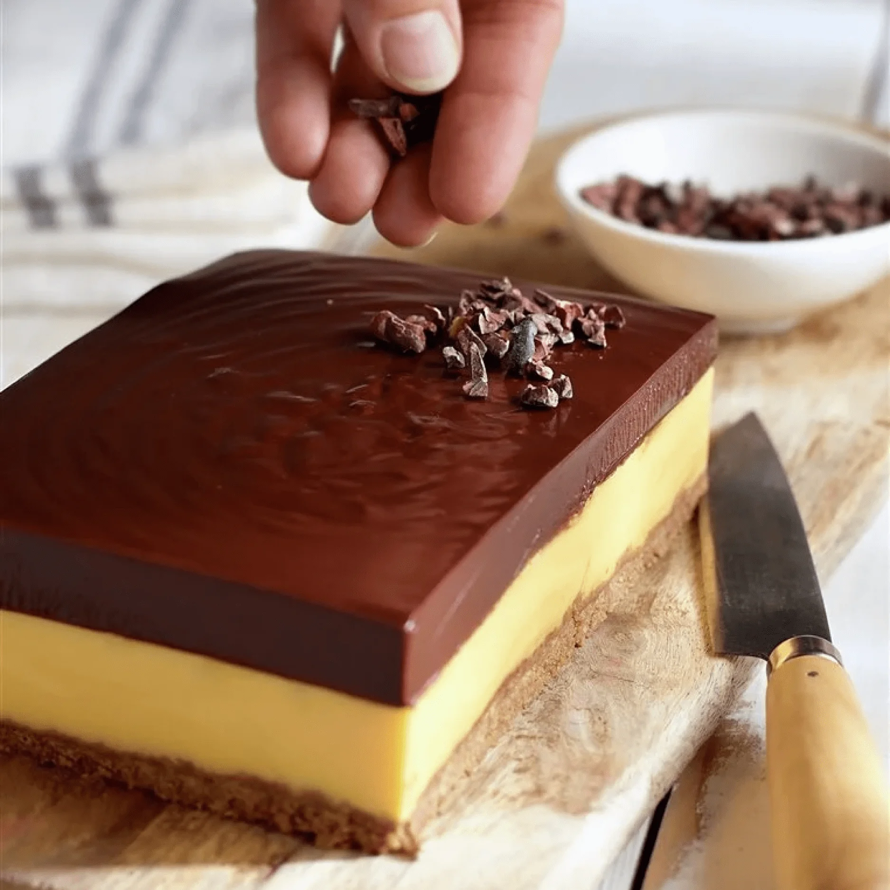

Recetario
Pastel de Chocolate
Ingredientes
- 360 gramos de cacao en polvo
- 175 mililitros de café expreso
- 235 mililitros de leche
- 440 gramos de harina
- 1 cucharadita de bicarbonato sódico
- ½ cucharaditas de sal
- 565 gramos de mantequilla
- 600 gramos de azúcar
- 4 huevos grandes
- 1 cucharada de extracto de vainilla
- 240 gramos de azúcar glas
- 170 gramos de queso blanco para untar
- 250 gramos de chocolate de cobertura
- 175 gramos de nata para montar
- 1 cucharadita de vinagre
Pasos
-
Tamiza la harina
Para preparar nuestro pastel de chocolate, primero hay que tamizar la harina con la sal y el bicarbonato en un cuenco. -
Mezcla cacao y café
En otro recipiente mezcla 160 g de cacao en polvo con el café y la leche. Bate, con varillas eléctricas, 375 g de mantequilla a temperatura ambiente de 3 a 5 minutos, hasta que esté muy cremosa. Añade el azúcar poco a poco, mientras se continúa batiendo (3 o 4 minutos más). -
Añade los huevos
Incorpora la vainilla y los huevos de uno en uno, y bate 4 minutos más. Agrega a la preparación anterior la mezcla de harina y la de cacao y café, poco a poco y alternándolas. Remueve bien con una espátula cada vez que se añade una de ellas. -
Engrasa un molde y hornea
Engrasa un molde de tarta redondo, de unos 20 cm de diámetro, con mantequilla. Vierte la masa obtenida en él y cuece 1 hora, en el horno precalentado a 175º. Retira y deja que se enfríe por lo menos 1 hora. -
Nivela y corta el bizcocho
Iguala el bizcocho cortando con un cuchillo la parte superior si hubiera quedado un poco abombada. Después, córtalo por la mitad en horizontal para obtener 2 discos. -
Prepara la crema agria
Bate la nata con el vinagre, mejor con varillas eléctricas, ½ minuto o 1 minuto, hasta que tenga cuerpo. Reserva en la nevera. Tamiza el azúcar glas con 200 g de cacao. Bate, también con varillas eléctricas, el queso blanco con 185 g de mantequilla, ambos a temperatura ambiente, 5 o 6 minutos, a velocidad media-alta. -
Agrega la mezcla de cacao
Incorpora la mezcla de cacao y azúcar, y sigue batiendo 4 o 5 minutos a velocidad media-baja. Trocea el chocolate de cobertura, fúndelo al baño María y añádelo a la preparación anterior. Agrega la crema agria y mezcla. -
Cubre con chocolate
Coloca uno de los discos de bizcocho en una fuente de servir para poder montar la tarta a capas. Cubre una parte con la crema de chocolate, coloca el otro disco encima y cubre la superficie y los laterales de la tarta con el resto de la crema. Reserva el pastel de chocolate en la nevera hasta la hora de servir.
Chocotorta
Ingredientes
- 2 paquetes de galletas de chocolate unos 400 gramos
- 600 gramos de queso blanco para untar
- 2 cucharadas de café soluble
- 1 litro de leche
- 250 gramos de azúcar
- 1 pizca de esencia de vainilla
- ½ cucharaditas de bicarbonato sódico
- 60 gramos de chocolate negro fondant
PARA EL DULCE DE LECHE
PARA DECORAR
Pasos
-
Prepara el dulce de leche
Pon la leche en un cazo y caliéntala sin que llegue a hervir. Baja la llama, agrega el azúcar y remueve con una cuchara de madera, hasta disolverlo. Añade la vainilla y el bicarbonato, y prosigue la cocción a fuego suave, sin dejar que hierva y removiendo continuamente, hasta que tenga la consistencia y el color que desees (entre 90 minutos y 2 h); cuanto más lo cuezas, más oscuro y denso quedará. Retira del fuego, remueve 10 minutos y deja enfriar. -
Bate el queso
Bate el queso de untar con 500 g de dulce de leche (si te sobra, resérvalo para otra receta), con varillas manuales, hasta que consigas una crema lisa y homogénea. Déjala enfriar en la nevera. -
Remoja las galletas
Coloca el café en un cuenco, agrega 200 ml de agua caliente y remueve hasta que se haya disuelto. Sumerge las galletas en el café durante un segundo y retira. Si las tienes más tiempo se quedarán excesivamente blandas. -
Monta las capas
Dispón una capa de galletas en el fondo de un molde cuadrado, sin dejar huecos entre ellas. Cúbrelas con un tercio de la crema de queso y dulce de leche, y repite la operación hasta formar 3 capas de cada ingrediente, terminando con crema. Deja la tarta en la nevera al menos 12 horas. -
Cubre con chocolate
Funde el chocolate al baño maría y espera a que se temple. Desmolda la tarta, cúbrela con el chocolate y resérvala en la nevera.
Berlinas
Ingredientes
- 300 mililitros de aceite de girasol
- 110 gramos de harina de fuerza
- 1 sobre de levadura seca
- 110 mililitros de leche
- 300 gramos de harina de fuerza
- 140 mililitros de leche
- 1 huevo
- 50 gramos de azúcar
- Sal
- 1,5 cucharadas de miel
- 50 gramos de mantequilla
- 120 de azúcar
- 150 gramos de chocolate negro fondant
- Canela
PARA LA PRIMERA MASA
PARA LA MASA FINAL
PARA DECORAR
Pasos
-
Mezcla los ingredientes
Para la primera masa, mezcla la levadura, la leche y la harina, y deja reposar 10 minutos. Añade entonces los ingredientes de la segunda masa: 280 g de harina, la leche, el azúcar, una pizca de sal, la miel, el huevo y la mantequilla fundida. -
Forma una bola
Amasa bien hasta obtener una pasta lisa y homogénea. Forma una bola, enharínala un poco y ponla en un cuenco grande untado con un poco de aceite. -
Deja reposar
Cubre con un trapo y deja reposar en un lugar tibio 1 hora o hasta que doble su volumen. Amásala de nuevo durante 5 minutos, extiéndela con un rodillo enharinado hasta que tenga un grosor de 1 cm. -
Corta círculos
Estira la masa sobre una superficie ligeramente enharinada y corta círculos con un aro de repostería de unos 6 u 8 cm de diámetro (si no tienes, puedes usar un vaso). -
Retira el centro
Utiliza otro aro de repostería, de 1 cm menos de diámetro, para retirar el centro de los círculos. Amasa la pasta sobrante y repite la operación hasta acabar la masa. -
Déjalos fermentar
Coloca los círculos sobre la placa forrada con papel sulfurizado (si quieres recórtalo en cuadraditos individuales) y déjalos fermentar alrededor de 1 hora. -
Fríe las berlinas
Calienta el aceite que resta en una sartén y ve friendo las berlinas, por tandas, hasta que estén bien doraditas. Retíralas con una espumadera y déjalas escurrir sobre papel de cocina unos instantes. -
Reboza en azúcar la mitad
Reboza la mitad de las berlinas en el azúcar mezclado con 1 cucharadita de canela. -
Funde el chocolate y baña el resto
Funde el chocolate al baño maría, removiendo, retíralo y baña el resto de las berlinas con él. Deja endurecer y sírvelas.
Tarta de Flan

Ingredientes
- 200 gramos de galletas sin azúcar
- 80 gramos de mantequilla
- 35 gramos de harina de maíz
- 500 mililitros de leche
- ½ limón
- 1 ramita de canela
- 3 yemas de huevo
- 2 cucharadas de sirope de arce
- 300 gramos de chocolate fondant sin azúcar
- 200 mililitros de nata para montar
PARA LA CREMA
PARA LA COBERTURA
PARA DECORAR
30 gramos de nibs de cacaoPasos
-
Tritura las galletas
Desmenuza las galletas sobre un cuenco, añade la mantequilla fundida y tibia, y amasa hasta obtener una pasta homogénea. -
Cubre un molde
Forra con papel sulfurizado un molde desmontable rectangular. Cubre el fondo con la masa de galleta, en una capa uniforme, y presiona para que quede compacta. Reserva 30 minutos en la nevera. -
Calienta la leche
Disuelve la harina de maíz en 50 ml de leche fría. Calienta la restante en un cazo, con la piel de limón lavada y la canela. Retírala antes de que hierva, deja templar y cuela. -
Coloca las yemas
Introduce las yemas en un cuenco. Agrega el sirope y la harina de maíz disuelta en la leche, y remueve hasta conseguir una preparación homogénea. Añádela a la leche aromatizada, ponla de nuevo al fuego y cuece, sin dejar de remover, hasta que empiece a espesar. Vierte esta crema en el molde, sobre la capa de galleta y reserva 1 hora en la nevera. -
Trocea el chocolate
Parte el chocolate en trozos y colócalo en un cuenco. Calienta la nata hasta que hierva y viértela sobre el chocolate; deja reposar 1 minuto y remueve con unas varillas hasta fundirlo. Luego, deja que se temple y añádelo al molde, sobre la capa de crema. -
Decora la tarta
Reserva en la nevera durante 1 hora como mínimo. Desmolda el flan y sírvelo decorado con los nibs de cacao.